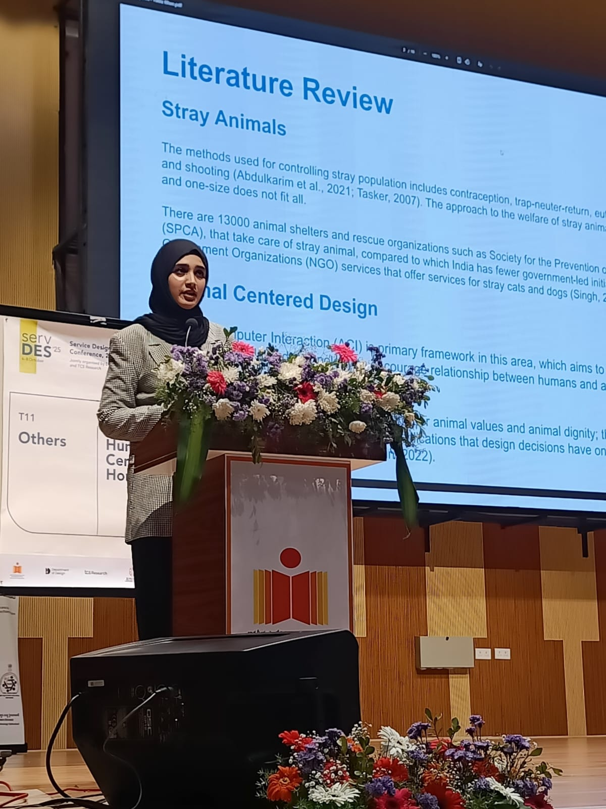
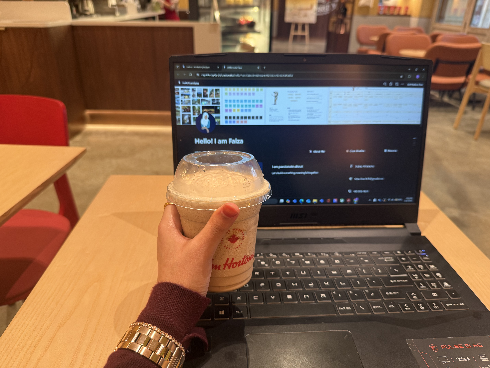

I didn't take a straight path
into CX.
And honestly, I don't think
I wanted to.

ServDes'25 · IIT Hyderabad
I've always been drawn to the details, like the decisions people make, the habits they fall into, and the little gaps between how things are designed and how they actually work.
That's usually where my work begins.
I work at the intersection of people, services, and products, looking to understand the gap between what customers experience and what teams assume they experience.
My background in product design and two years of teaching have shaped how I ask questions, listen, and make sense of what I find and, importantly, how I translate those insights into something teams can actually use.
Based in Dubai. Published at ServDes'25, IIT Hyderabad.
Currently exploring CX and Service Design opportunities.
How I got here
I come from a product design background, and over time I found myself becoming more interested in the why behind design decisions than the outcomes themselves.
I enjoyed shaping experiences, but I was always more curious about the deeper patterns underneath them about how people think, what influences their behaviour, and where the experience breaks down between intention and reality.
I later spent two years teaching design, which turned out to be one of the most formative things I've done.
Teaching pushed me to break complex ideas into something others could actually understand and engage with. It taught me to listen carefully, ask better questions, and pay attention to how differently people can interpret the same thing.
Those are skills I now carry into research and service design.
"Teaching pushed me to ask better questions. Research pushed me to sit with uncomfortable answers."
Life outside the notebook
Moving to Dubai has meant new routines and a lot of internal change. Somewhere in the middle of all that, I've found myself returning to something I've always loved; sitting in cafés with my cold coffee and laptop, quietly observing people.
Who hesitates.
What catches someone's attention.
How people navigate a space without thinking about it.
It reminds me why I'm drawn to this field in the first place: to slow down, pay attention, and make sense of the world through people.

dubai café · my kind of fieldwork
care · trust · access · belonging · simplicity